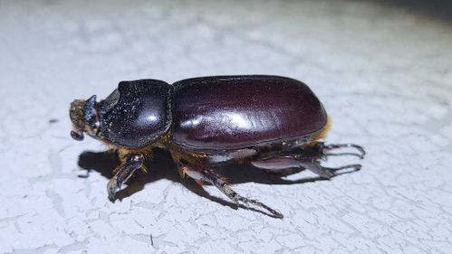
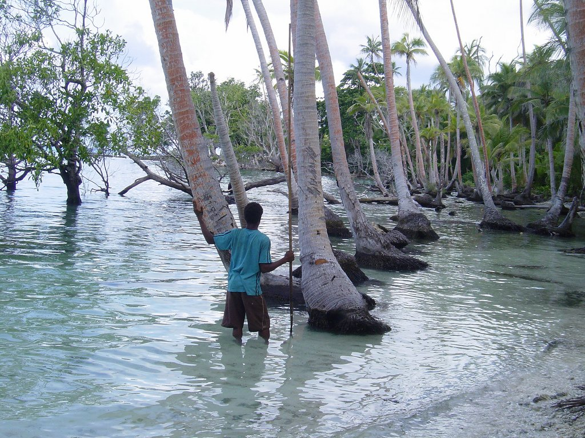

CRB Biology
Aubrey Moore
University of Guam
Coconut Rhinoceros Beetle Science Symposium
September 11, 2024
Online at https://aubreymoore.github.io/CRB-biology-2024/reveal.js/crb-biology-2024.html

- CRB Biology
- Taxonomy
- Geographic range
- Life cycle and population dynamics
- CRB Monitoring
- Pheromone traps
- Damage surveys
- CRB Management
- Eradication
- Sanitation
- Biological control
- Concluding remarks
BIOLOGY:
TAXONOMY
- Coleoptera "beetles"; 400,000 sp.
- Scarabaeidae "scarab beetles"; 35,000 sp.
- Dynastinae "rhinoceros beetles"; 1,500 sp.
- Oryctes 45 sp.
- Oryctes rhinoceros (Linnaeus, 1758)
- Oryctes 45 sp.
- Dynastinae "rhinoceros beetles"; 1,500 sp.
- Scarabaeidae "scarab beetles"; 35,000 sp.



BIOLOGY:
GEOGRAPHIC DISTRIBUTION
CRB BIOLOGY:
LIFE CYCLE AND POPULATION DYNAMICS




MONITORING:
PHEROMONE TRAPS
Pheromone traps on Guam did not result in significant population reduction. The recapture rate for 567 marked beetles released in the vicinity of pheromone traps was only 11%.
The relationship between pheromone trap catch and CRB population density is often assumed to be linear. However, it is probably nonlinear.

MONITORING:
DAMAGE SURVEYS


Comment on CRB Population Monitoring
We need alternate methods to automate monitoring CRB populations: perhaps using advanced remote sensors (imaging, acoustics, RADAR, LIDAR, eDNA, electronic noses, etc.)
CRB MANAGEMENT:
ERADICATION
CRB MANAGEMENT:
SANITATION

CRB MANAGEMENT:
BIOLOGICAL CONTROL

CRB populations currently invading Pacific Islands are resistant to OrNV
Laboratory bioassays on have failed to find an isolate of OrNV which is an effective biocontrol agent for the Guam CRB population
CONCLUDING REMARKS
concluding remarks 1
Efforts should continue to find support for a well-funded, well-coordinated international project as detailed in the CRB-SAP.
Strategic Action Plan for Coconut Rhinoceros Beetle
Pacific Ecological Security Conference 2022
Koror, Palau
concluding remarks 2
The search for OrNV isolates which can be used as effective, self-sustaining biological control agents for CRB populations on Guam and elsewhere should be continued.